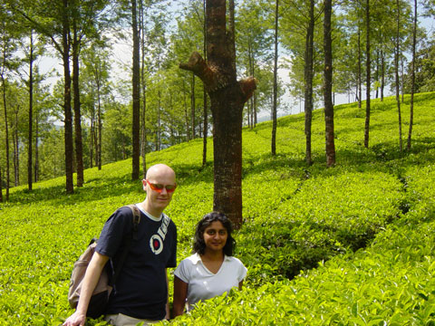

Had toast & Idly for breakfast.
Picked up by mini coach for our tour at 10am.
First stop was Erivakulam National park at the top of a mountain. We switched to a jeep at the entrance to the park. As a foreign national I paid 200 rupees for entrance but Binnie the driver got Yamini’s ticket which was 15 rupees. Saw some rare goat that was nearly extinct & is now protected. Saw a rare plant that only flowers once every 12 yrs - Neelakurinji. On the way back down we stopped at a waterfall where we also saw some beautiful blue butterflies. We also stopped to look at the tea plantations. We then stopped for lunch at Bhavan Saravan in centre of Munnar.
After lunch we stopped at two dams.
Stopped at echo point.
Drove to Top Station which was covered in cloud. Bought some green tea. Yamini wasn’t cold in her shorts, eventhough we were told it was 7 degrees centigrade.
On way back down saw some wild elephants that had ventured into the tea plantation. Also saw some working elephants. Saw some eucalyptus trees.
Arrived back at Tea County approx 6pm.
Had a beer in the bar & wrote journal and then dinner. Had chicken Khorma which looked a really nice green & lovely smell which is why I had some. Tasted nice though lightly spiced. Whereas usually chicken korma is such a ghastly artificial colour so never actually had it before.
Had Gulab Jamun for dessert.

{kind=link}